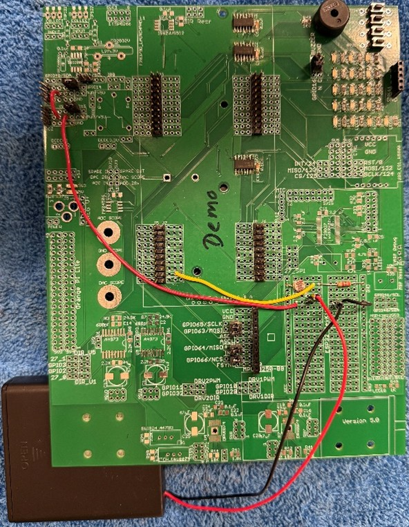
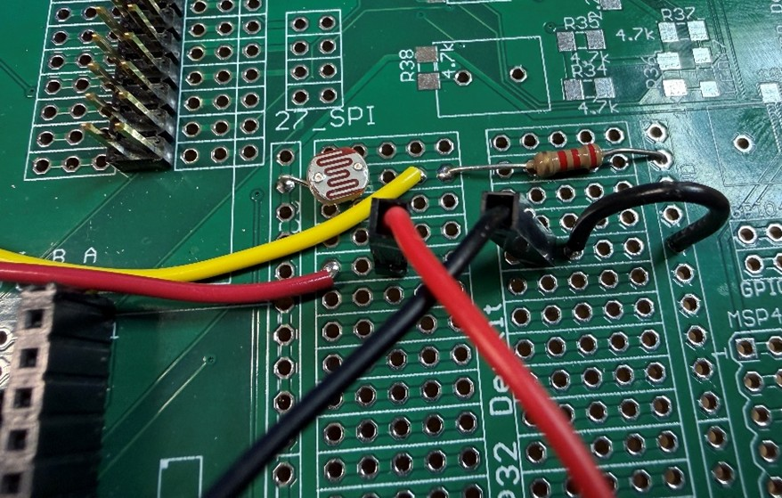

SE 423 Mechatronics
Homework Assignment #4
The Demonstration Check-Offs For Exercises 2 and 3 Are Due By 5PM Tuesday, March 31.
The Demo Check-Offs for Exercise 4 are due by 5PM Tuesday, April 07.
Remainder Due On Gradescope, by 9AM Wednesday, April 08.
Give yourself a small introduction to working in Linux, especially at the command prompt, by reading through the help at http://community.linuxmint.com/tutorial/view/244. Answer the following questions:
/home/pi directory, there is a file named
“hw4data.dat”. Also in the /home/pi directory, there is a directory named “hw4”. What text would you
type to copy “hw4data.dat” to the directory “hw4” with the new name “hw4trial1.dat?”
less” and “cat” commands do? How are they different?
ifconfig” and “ping” commands do?
2:30PM April 25th, 2026 using the “date” command?Soldering. Question 3 will have you program EPWM8 to drive two RC servos using its A and B PWM outputs. RC servos are position-controlled geared motors and do require a bit of current, especially when stalled. For that reason, it is not a good idea to power the RC servos with the USB power from your PC. Instead, I am giving you a battery pack that holds 4 AA batteries. Each battery is around 1.5V, so the RC servos will be powered with 6V. See the picture below to find where to solder the battery pack leads.


RC servos are popular in RC airplanes and RC cars. RC servo motors are devices that you can command to move to a desired angle. Typically, they only range from -90 degrees to 90 degrees. To command these motors, a PWM signal with a slow carrier frequency of 50Hz (20 millisecond period) is used. Then, to command the motor’s angle, you change the duty cycle, setting it between about 4% and 12%. -90 degrees is approximately 4% duty cycle, 0 degrees is close to 8% duty cycle, and +90 degrees is close to 12% duty cycle. Any other angle desired is linear between those values. First, modify the initialization code for these two EPWM channels. Looking at your breakout board’s labeling, you should see that GPIO14 (EPWM8A) and GPIO15 (EPWM8B) are the pins connected to the RC Servo “3 pin” connectors. In homework #2 and lab #3, you set up PWM channel A to drive an LED and then drive the two motors of the robot. In this exercise, you will set up EPWM8 in a similar fashion, but now you also have to configure the B output of the EPWM8 peripheral. So first get the EPWM8A output working. You can copy the setup code you used for EPWM12 in HW#2 as a starting point for EPWM8. However, you will need to change the PWM carrier frequency to 50Hz instead of the 5000Hz we used in HW#2. Remember that when you set the carrier frequency, the TBPRD register is only 16 bits, so its value cannot exceed 65535. So, in other words, you will need to set CLKDIV to something other than 0. Before you plug in your RC servo to your green board, use a digital channel of the oscilloscope to scope the PWM signal and make sure it is the signal you expect. Demo this to your TA before using batteries to drive an RC servo. Then, when you have EPWM8A working, set up EPWM8B. Most EPWM8A setups also affect EPWM8B. For example, 8A and 8B must use the same carrier frequency because there is only one TBPRD register. The only additional registers you have to use for EPWM8B are AQCTLB and CMPB. AQCTLB is set very similarly to AQCTLA, but NOTE there is a CBU event. So set up EPWM8 to have the required RC Servo carrier frequency of 50Hz, and set CMPA and CMPB’s values so that it commands the RC Servos to 0 degrees (8% duty cycle).
Similar to the PWM functions you created in Lab #3, create two functions
“void setEPWM8A_RCServo(float angle)” and
“void setEPWM8B_RCServo(float angle)”.
The parameter “angle” is a value between -90 and 90 degrees, where -90 equates to 4% duty cycle, 0 equates to 8% duty cycle, and 12% equates to 90. Make sure to first saturate the “angle” between -90 and 90, just in case a value outside of the range is passed. Test that your functions work by writing some code that gradually changes the value passed to “angle” so that the RC servo is driven back and forth. If you are only given one RC servo, make sure to plug it into both “3-pin” RC servo connectors so that both your EPWM8A and EPWM8B functions are working. Show your RC servos movements to your TA.
For this exercise, I would like you to look into the external interrupt capabilities of the F28379D pins, and also give you another exercise in merging code from one piece of example code into another project’s code. The F28379D allows you to set any of its GPIO pins as an input and, in addition, can generate an interrupt when the signal on the GPIO pin transitions from High to Low (or Low to High, you can pick). The best use case for this is an external chip that needs to tell the F28379D it has new data and wishes to be communicated with. An external slave chip that communicates with the master via SPI is a perfect use case for this. If you remember, with SPI, the only way the master receives data from a slave chip is by sending data to the slave. Using an external interrupt, the slave chip could set a signal high to indicate that it had new data to send to the master. This signal would be received by an F28379D GPIO, triggering an interrupt. In the interrupt function, the SPI send/receive commands could be issued to read the new data from the slave device. For this exercise, instead of having an external SPI slave chip interrupt the F28379D, we are going to have two of the push buttons on your green board cause two different external interrupts. In the same folder as HWstarter and Labstarter, there is another starter project called XINTstarter. (XINT is eXternal INTerrupt) Go ahead and create a new project using this project starter. Build and run the program. Pull up Tera Term and notice that the number of times you have pressed push button 1 and push button 2 is displayed. Press buttons 1 and 2 several times and see how many counts occur. These are cheap push buttons, and they can have contact bounce that could cause more than one interrupt each time you press the button.
Study the external interrupt starter code, then modify it so that instead of PB1 and PB2 causing the interrupts, PB3 and PB4 cause the two interrupts XINT1 and XINT2. Then, as one final exercise to give you some more experience merging example code, move all necessary code from this application that causes external interrupts when PB3 and PB4 are pressed into your RC servo problem 3 project. Your final code should drive the two RC servos and display the number of times PB3 and PB4 have been pressed. You do not have to, but you could do something fun like move the RC servo to a new position each time PB3 is pressed. Show this working code to your TA.
Obtain the rotation matrix, which converts base J’s coordinates into base I’s coordinates (RJI), for the following cases:
Given the following translation vectors:
Moreover, using the results on the previous 2a, 2b, and 2c questions respectively, obtain the homogeneous transformation matrix, which converts frame J coordinates to frame I coordinates.
Using the homogeneous transformation matrix found in part c. above, solve the following two questions:
This question is mainly a For Your Information item. You will not be soldering transistors or relays to your green board, or writing any program to turn a transistor or relay on or off. All I want you to turn in for this problem is to read this information and write me a synopsis.
Look at the top left corner of your green board; there are two spots for soldering TIP122 transistors. Also, close to the transistor, there is a spot for one relay. For this exercise, you will learn how to wire/use both transistors and relays to allow the F28379D’s digital outputs to turn on and off high-current devices that the digital outputs alone would not be able to drive, and if attempted to drive these loads, would damage the digital outputs. Below explains and illustrates how to wire GPIO outputs to the given NPN transistors, then use the transistors’ high-current outputs to drive an ultra-bright LED and a relay.
If you are unfamiliar with transistors, refer to an introductory electronic circuits text or check the web; a good transistor-switch tutorial is available at http://electronicsclub.info/transistorcircuits.htm. In a transistor, the (possibly large) collector-emitter current is controlled by the small base current through the relationship Ic = hFE ⋅IB. Since we are interested in using the transistors as switches, we will operate them only in the “on” (saturation) and “off” (cutoff) modes. We can “turn off” the load circuit by setting IB = 0. Likewise, if we know the desired current IC and the gain hFE (from datasheet), we can choose IB so that the transistor is entirely “on” (saturated). When the transistor is saturated, the voltage drop across the collector-emitter junction is small, and the junction can be modeled as a short circuit.
Refer to Figure 3 for the following example. If we want to use 5V to drive an ultra-bright LED in series with a 47Ω resistor, we can calculate.
|
|
For the TIP122 NPN Darlington Transistors you will use, hFE ≥ 1000. Therefore, IB ≥ 0.11 mA. To realize this current with our microcontroller’s 3.3V output, we need to determine an appropriate value for the resistor RB. When V B > 1.4V, the base-emitter junction of a Darlington transistor behaves like a diode with a 1.4V drop. Therefore, the drop across RB is V R = 3.3V-1.4V = 1.9V. Now RB ≤ = ≈ 17kΩ Therefore, any resistor with a value less than 17kΩ would suffice.
For the sake of universality, we will use a resistor with a much lower value (470Ω) so that we can drive larger loads if needed. You are not asked to do this for this homework assignment, but if you want to use the transistor spots on your green board in the future, follow these guidelines. Solder the two TIP122 chips onto the green board. Solder two 470Ω resistors in the places labeled “RB”. Also, solder the LED circuit to the “COLLECT” terminal of one of the transistors as shown in Fig. 1. The only power you currently have to drive the transistor loads is the 6V battery pack voltage. Do not use USB power, 3.3V, or 5.0V to drive transistor or relay loads. Solder the relay circuit shown in Fig. 2 to the “COLLECT” terminal of the second transistor. (Note the current rating of this small relay’s switch is 0.5 Amps, so obviously you could drive a larger current load than a standard LED.) Solder a GPIO to the INPUT of the ultra-bright LED circuit and a different GPIO to the INPUT of the relay circuit.
For this assignment, I would like you to expand on the state machine and pseudocode of HW #3. Now, instead of just having two distance readings from the LIDAR sensor (one front distance and one front-right distance), you have access to the 228 distance readings from the LIDAR. The robot’s LIDAR calculates 228 distance readings starting at -120 degrees on its right and sweeping to 120 degrees on its left. So the LIDAR produces a distance reading every 1.05 degrees, ranging from -120 to 120. The LIDAR readings are given to you in an array of 228 elements. Element 113 is the distance reading straight in front of the robot. The picture below gives you an idea of the sweep of measurements, but note that it shows only 17 measurements.
Given these new measurements from the LIDAR, modify the obstacle avoidance section of your state machine with decisions and required states to have the robot either follow the left or right wall when it recognizes an obstacle. Make sure to think about what you should do if you encounter an obstacle on your left, on your right, or straight in front of you. As a final task, think about how you could recognize human legs and what you would have your robot do?
This homework assignment is up to you. Use your creativity to build a simple mechatronics project that uses at least one RC servo motor and one sensor of your choice. You can use the actuators and sensors we have used in homework up to this point. Choose any one of the following:
Anything goes, but keep in mind that you also have a final project with the robot to complete by the end of the semester. So, in other words, we are not expecting an elaborate, finely polished design. You cannot use the LADAR or the lab robot for the project. It needs to be using the homework board.
You can send us STL (units in mm) files for printing on the lab’s 3D printers, or use another printer you have access to. Also, there are some building materials in the Mechatronics Lab, like machine screws, plastic sheets, and “Super Velcro”. (Ask if there is a part that you need and we will see if we have it in the lab).
This assignment spans both HW #4 and HW #5. Your finished product should be completed and checked off by Tuesday, April 21.
What needs to be turned in for HW #4 question 9?
Make sure that you comment you code and put your initials in your Gradescope submission! See https://marius-juston.github.io/SE-423---Class-Material/Homeworks/commenting_code_example.pdf for how we expect the code to be commented like!